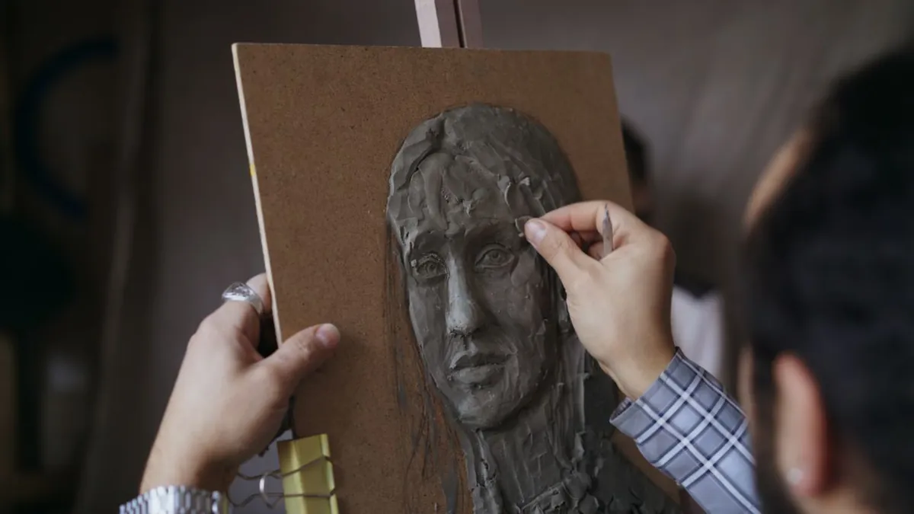

Барельеф по фотографии — один из самых востребованных заказов в мастерской. Его заказывают для увековечивания памяти близкого человека, как подарок на юбилей, для установки на памятник или фасад здания. В этой статье расскажем, как проходит работа от первого звонка до готового изделия.
Что такое барельеф
Барельеф — это скульптурное изображение, выступающее над фоновой поверхностью менее чем наполовину своего объёма. В отличие от горельефа (выступающего более чем наполовину) или полностью объёмной скульптуры, барельеф обычно монтируется на плоскую поверхность: стену, надгробную плиту, постамент.

Для мемориальных работ барельеф предпочтительнее: он лаконичен, устойчив к вандализму и атмосферным воздействиям, хорошо читается издалека.
Какие фотографии нужны
Качество портретного сходства напрямую зависит от качества исходных фотографий. Идеальный набор:
- Фото анфас (лицо прямо) — обязательно. По нему строятся пропорции лица.
- Фото в профиль — очень желательно. Даёт форму носа, лба, подбородка.
- Фото в три четверти — дополнительно помогает с объёмом.
- Фото хорошего разрешения — от 1 МП и выше. Размытые и пикселизированные снимки не позволят передать детали.
Если качественных фото нет — не отчаивайтесь. Мы работали с архивными снимками на стекле 1950‑х годов. Главное — хотя бы одно чёткое изображение лица.
Как проходит работа
1. Первичная консультация
Вы присылаете фотографии и описываете задачу: размер барельефа, материал, текст надписи (если нужна), сроки. Мы оцениваем сложность работы и называем стоимость.
2. Создание 3D-модели
По фотографиям создаём цифровую скульптуру. Присылаем рендеры в нескольких ракурсах — вы проверяете сходство и вносите правки. Этот этап может занять 2–5 итераций, пока не будет достигнуто полное сходство.
3. Изготовление мастер-модели и литьё
После утверждения 3D‑модели изготавливается физическая мастер-модель (фрезеровка или ручная лепка), с неё снимается форма, и производится отливка в металле.


4. Обработка и доставка
Отливку шлифуют, патинируют в согласованный цвет, покрывают защитным составом. При необходимости гравируют надпись. Отправляем по всей России транспортной компанией или самовывоз из Сочи.
Мы не считаем работу законченной, пока заказчик не подтвердил сходство. Портретное совпадение — это профессиональная ответственность, а не опция.
Стоимость и сроки
Стоимость портретного барельефа зависит от:
- размера (от А4 до А1 и крупнее);
- материала (бронза или латунь);
- сложности рельефа (одно лицо или сложная сцена);
- наличия надписи и обрамления.
Ориентировочные сроки: 3–6 недель от утверждения 3D‑модели. Срочные заказы обсуждаются индивидуально.
Хотите заказать барельеф?
Пришлите фотографии в Telegram или на email — ответим в течение дня с предварительной оценкой стоимости.
Написать в Telegram →